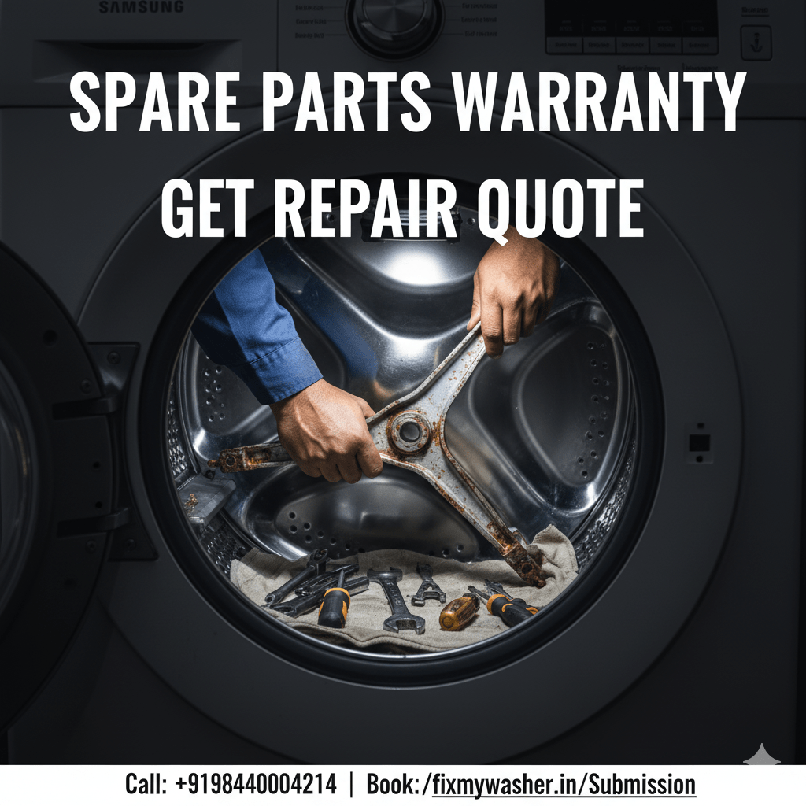
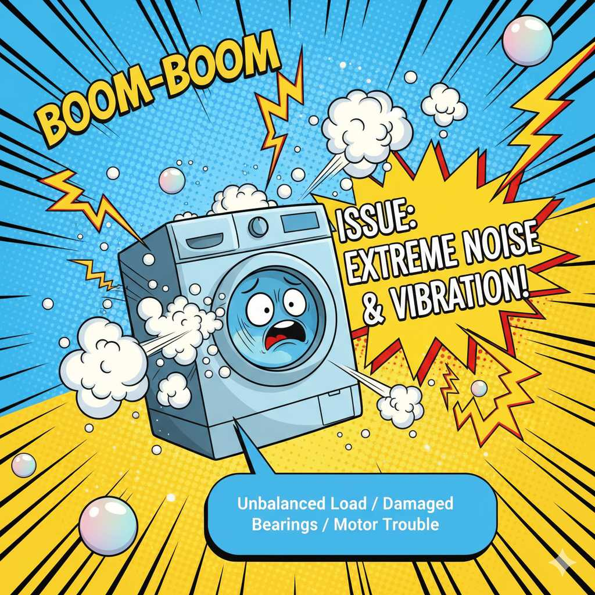
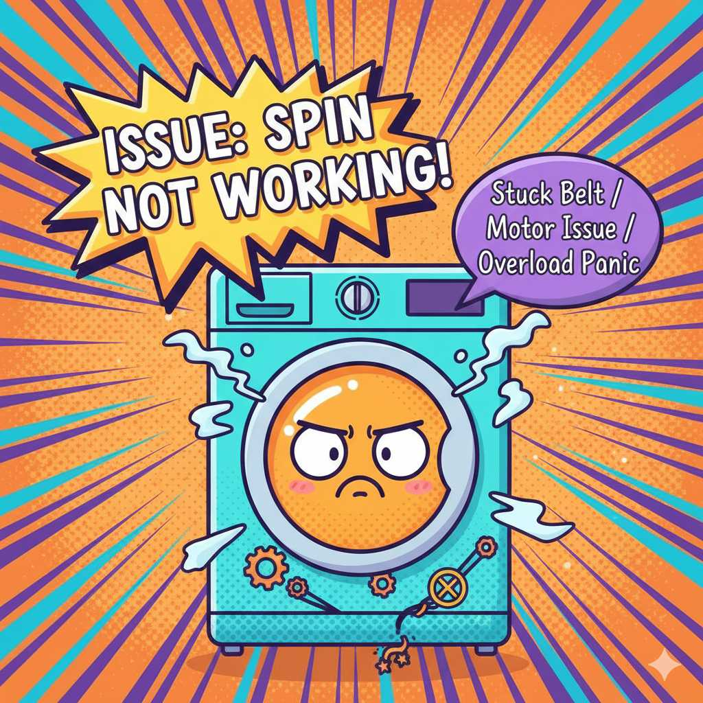
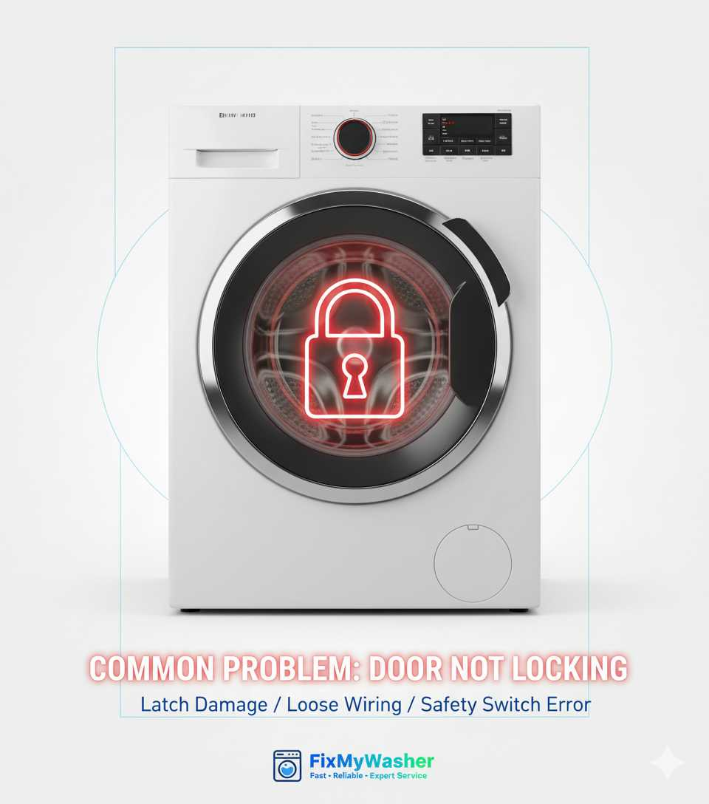
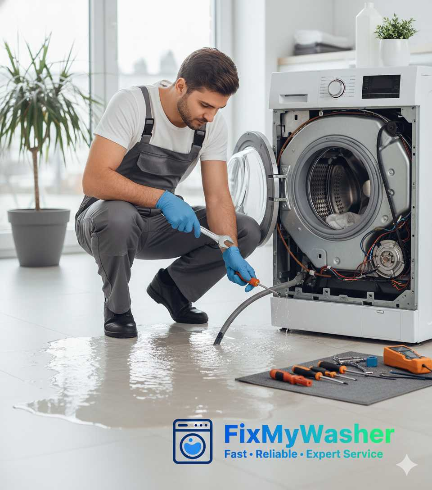

Bosch Washing Machine Repair in Bangalore — Same-Day Doorstep Service
A Bosch washing machine is a precision German-engineered appliance, and it deserves a technician who actually understands its EcoSilence Drive motor, VarioPerfect wash programs, and self-diagnostic E-series error codes — not a generalist appliance repairman. FixMyWasher's Bosch-trained technicians handle repairs for every Serie 2, Serie 4, Serie 6 and Serie 8 model across Bangalore, with a free on-site diagnosis and genuine spare parts on every visit.

Bosch Machine Showing an Error Code Right Now?
Tell our technician the code on the phone and we'll bring the right part on the first visit.
Call 9164151568Bosch Error Codes We Diagnose and Fix
Bosch washing machines are built to self-report faults through their display panel, which is genuinely useful once you know how to read it. Below are the codes our technicians see most often on Bangalore service calls, along with what's usually behind them.

E18 / E:18 — Drainage Fault
- Blocked drain pump filter (most common cause in hard-water Bangalore areas)
- Kinked or crushed drain hose behind the machine
- Worn-out drain pump motor needing replacement
- Coins, buttons or lint trapped in the pump housing
E04 — Heating Element Fault
- Failed heating element from scale buildup
- NTC temperature sensor giving a faulty reading
- Wiring or connector corrosion at the heater terminal
- Common on machines that have never been descaled
Drum Not Spinning
- Worn carbon brushes on the EcoSilence Drive motor
- Door lock (interlock) not confirming closed
- Drive belt slipped off the motor pulley
- Overloaded drum triggering the safety cutout
Excessive Noise / Vibration
- Worn drum bearings (needs full bearing replacement)
- Shock absorbers past their service life
- Machine not levelled on uneven flooring
- Transit bolts left in place after installation
Why Bangalore's Hard Water Affects Bosch Machines Specifically
Bosch's EcoSilence Drive motor and heating element are precision components, and Bangalore's borewell-sourced hard water accelerates scale buildup on both far faster than the manufacturer's test conditions assume. We regularly see E04 heating faults and reduced spin performance on Bosch machines in Whitefield, Sarjapur Road and Electronic City that are just 18–24 months old, almost always traced back to limescale rather than a manufacturing defect. Our service includes a descaling check as part of every Bosch diagnosis, and we recommend a preventive descale every 3 months if you're on borewell water.
Bosch Model Range We Service
Bosch sells fairly different internal architecture across its Bangalore lineup, and knowing which platform you own changes how a technician diagnoses the fault. Here's how we approach each range.

Serie 2 & Serie 4 (Entry & Mid)
- Standard induction motor, not EcoSilence — brush wear is the most common spin fault
- Mechanical timer-driven models still in circulation need programmer repair, not PCB swap
- Basic display panel means fewer self-diagnostic codes; we rely more on manual testing
- Most affordable to repair since spare parts are simpler and widely stocked
Serie 6 & Serie 8 (Premium)
- EcoSilence Drive brushless motor — fewer wear parts but repairs need motor-specific diagnostics
- i-DOS automatic detergent dosing unit can clog and misread doses; needs its own cleaning cycle
- Home Connect WiFi models occasionally need a module reset rather than a hardware fix
- Higher-spec PCBs are pricier to replace, so we always attempt component-level repair first
Front Load vs Top Load Bosch
- Front load dominates Bosch's India range — door seal and drum bearing repairs are our most frequent calls
- Top load Bosch models are less common in Bangalore but we stock impeller and lid-switch parts
- Washer-dryer combo units need separate diagnosis for the drying element vs the wash cycle
Older Bosch Models (7+ Years)
- Discontinued parts sourced through our supplier network, not just OEM stock
- We give an honest repair-vs-replace opinion if the drum or PCB is the failure point
- Door seal and bearing failures are typical at this age even with light usage
What You Can Safely Check Yourself Before Calling Us
Not every washing machine issue needs a technician visit, and we'd rather tell you that upfront than charge a call-out fee for a five-minute fix. Before booking, it's worth checking these: is the door fully latched (front-load Bosch machines won't start with even a slightly ajar door), is the drain hose kinked behind the machine, and is the power socket itself working. If your machine shows E18 specifically, try clearing visible debris from the drain filter at the bottom-front panel first — this alone resolves a meaningful share of E18 calls we get in Bangalore.
What you should not attempt yourself: opening the drum assembly, replacing the heating element, working on the PCB, or handling the door seal without draining the machine first. Bosch drums are balanced assemblies, and an incorrectly reseated bearing housing can cause worse vibration damage than the original fault. Electrical faults on Indian household wiring also carry real shock risk when the machine is still connected to a live supply. This is where our technicians' Bosch-specific training actually earns its cost — correct diagnosis the first time avoids a second visit.
Bosch Installation, Uninstallation & Relocation
Beyond repairs, we handle the full lifecycle of your Bosch machine. New Bosch purchases in Bangalore often arrive without proper installation from the retailer — transit bolts left in place is one of the most common causes of "excessive vibration" calls we get within the first month of a new machine. Our installation service removes transit bolts correctly, levels the machine on uneven Bangalore flooring, and connects the inlet/outlet hoses to spec. If you're moving homes, we also offer safe uninstallation with transit bolts reinserted so the drum doesn't get damaged in transit, plus reinstallation at your new address.

Transit bolt removal & correct levelling
Inlet/outlet hose connection & leak testing
Safe relocation with bolts reinserted
Electrical socket & earthing check
Clearance check for ventilation & drainage
First-wash test cycle before we leave
Is Your Bosch Fault Urgent, or Can It Wait?
A quick way to decide whether to call today or schedule for later in the week.
Call Us Today
- Water actively leaking onto the floor during a cycle
- Burning smell or visible sparking from the machine
- Machine trips the house's main electrical breaker
- Door won't unlock with wet laundry trapped inside
Can Be Scheduled
- Mild vibration or noise that hasn't worsened recently
- Slightly longer wash cycles than usual
- Detergent drawer draining slowly
- Minor E-series code that clears itself after a restart
How Bosch Repair Works With Us
Book & Dispatch
Tell us the model and error code on the phone; a Bosch-trained technician is assigned same day.
On-Site Diagnosis
Free inspection with a written, itemised quote before any work begins — no surprises.
Genuine Parts Repair
Only genuine or OEM-equivalent Bosch parts fitted — drain pumps, bearings, PCBs, brushes.
Test & Warranty
Full wash cycle test before we leave, plus a 90-day warranty on parts and labour.
Bosch Repair Estimated Pricing
| Service | Estimated Range |
|---|---|
| Doorstep inspection & diagnosis | Free |
| Minor repair (drain pump filter, hose, minor part) | ₹400 – ₹900 |
| Motor / carbon brush replacement | ₹900 – ₹1,800 |
| Drum bearing replacement | ₹1,800 – ₹3,500 |
| PCB / control board replacement | ₹2,500 – ₹5,500 |
Exact cost depends on your specific Bosch model (Serie 2/4/6/8) and part availability. Final pricing is always confirmed in writing before repair begins.
Why Bangalore Trusts Us With Bosch Machines
Bosch-Trained Techs
Familiar with EcoSilence Drive and VarioPerfect systems specifically
Same-Day Visit
Book before 2 PM for same-day service across Bangalore
90-Day Warranty
On both parts and labour for every Bosch repair we complete
Genuine Parts
No third-party substitutes on drain pumps, PCBs or motors
Recent Bosch Repairs in Bangalore
Ramesh K., Koramangala
"Our Bosch Serie 4 was throwing an E18 code and wouldn't drain. Technician found the pump filter clogged with a hairpin, cleared it and checked the pump motor — done in under an hour."
Anitha S., HSR Layout
"Machine stopped spinning altogether. Turned out to be worn carbon brushes on the motor — a Bosch-specific part most local repairmen don't stock. FixMyWasher had it on the van already."
We Also Repair These Brands in Bangalore
Related Services
Bosch Repair Coverage Across Bangalore
Our Bosch-trained technicians are distributed across the city rather than dispatched from one central workshop, which is what keeps response times under 90 minutes even during peak traffic hours. In the eastern belt covering Whitefield, Marathahalli and Sarjapur Road, we see a high volume of E04 heating faults on newer Serie 6 machines, likely tied to the harder borewell water common in these newer layouts. Central Bangalore — Indiranagar, Koramangala and HSR Layout — skews toward older Serie 2 and Serie 4 installations where motor brush wear and door seal replacement are the recurring jobs. In the southern and western pockets including Jayanagar, JP Nagar and Rajajinagar, apartment-complex plumbing pressure variations are a frequent cause of the E18 drainage code, since low mains pressure combined with a long drain run stresses the pump more than Bosch's default settings anticipate.

Extending Your Bosch Machine's Life Between Services
Bosch machines are built for a long service life, but a few habits noticeably reduce how often you'll need a repair call. Running the built-in drum-clean or hot-wash maintenance cycle monthly prevents the detergent residue buildup that leads to the "musty smell" complaint we see often. Leaving the door and detergent drawer slightly open between washes lets the rubber door seal dry out fully, which is the single biggest factor in how long that seal lasts before it needs replacing. If you're on borewell water, we genuinely recommend a professional descale every three months rather than waiting for the E04 heating fault to appear — by the time the error shows up, the element itself is often already damaged.
Bosch Washing Machine Repair FAQs
Do you use genuine Bosch spare parts?
Yes. Every repair uses genuine or OEM-equivalent Bosch parts — drain pumps, carbon brushes, door seals and PCB units — backed by a 90-day warranty.
How soon can a technician reach me in Bangalore?
Typically within 90 minutes across Koramangala, Indiranagar, HSR Layout, Whitefield and most Bangalore neighbourhoods.
What does the E18 error mean on my Bosch machine?
E18 indicates a drainage fault — usually a blocked drain filter, kinked hose, or a failing drain pump. Our technicians resolve this on-site in most cases.
Do you provide a warranty on the repair?
Yes, all Bosch repairs come with a 90-day warranty covering both parts and labour.
Is it worth repairing an older Bosch machine, or should I replace it?
If the drum bearing or motor has failed on a machine over 8 years old, replacement parts can approach a meaningful fraction of a new entry-level machine's cost. We give an honest comparison on-site rather than pushing repair regardless of age.
Why does my new Bosch machine vibrate so much?
This is almost always leftover transit bolts from an incomplete installation, or an unlevelled base. Both are quick fixes and don't indicate a manufacturing fault.
Can I get the i-DOS or Home Connect features repaired?
Yes, our Serie 6/8-trained technicians handle i-DOS dosing unit cleaning and calibration, and can troubleshoot Home Connect WiFi module connectivity issues.
Do you install new Bosch washing machines?
Yes, we offer full installation including transit bolt removal, levelling, hose connection and a first-wash test, separate from our repair service.
Get Your Bosch Washing Machine Fixed Today
Free diagnosis, genuine parts, and a 90-day warranty — on every Bosch repair across Bangalore.